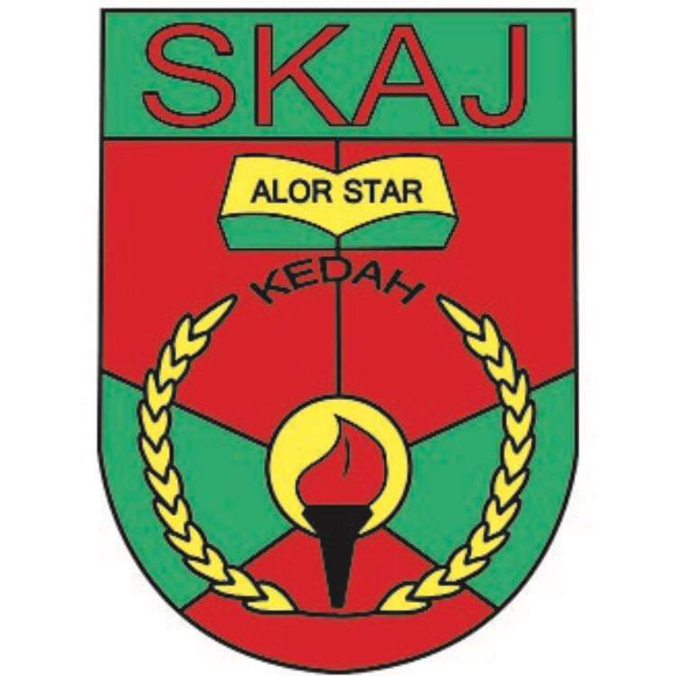
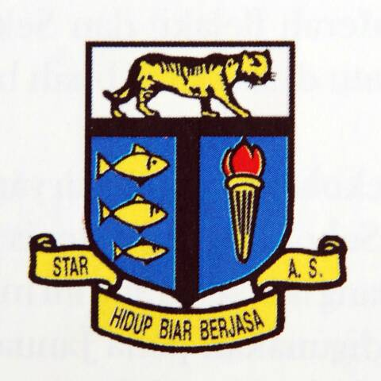

|  |  | ||
| Sekolah Kebangsaan Alor Janggus | Sekolah Menengah Kebangsaan Alor Janggus | Sekolah Menengah Kebangsaan Tunku Abdul Rahman | Universiti Teknologi Mara |
|---|---|---|---|
| I went to this school for 6 years from grade one to grade six. | I continued my studies to the secondary school level from form one to form five. | Then I intend to continue my studies to form six for a year and a half. | Now I have managed to further my studies to university level with a major that I am interested in. |